Parts and Materials Required
- VACUUM PUMP, QUAD HEAD
Time Required
- 60 minutes
Removal Procedure
- Remove the vacuum module and place on a sterile, clean workbench.
 Remove the ten 3mm hex screws that are located around the front edge and at the bottom of the module, only one screw is located on the bottom.
Remove the ten 3mm hex screws that are located around the front edge and at the bottom of the module, only one screw is located on the bottom.
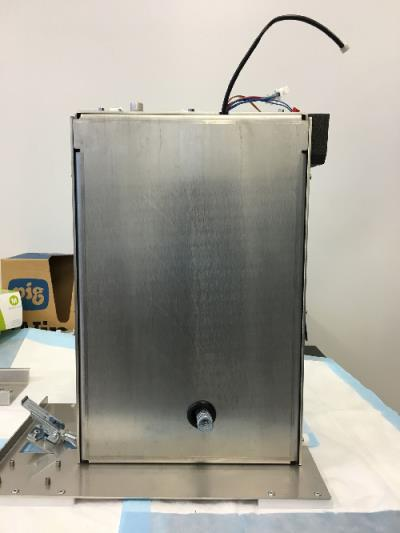
- Remove the pump cover plate.
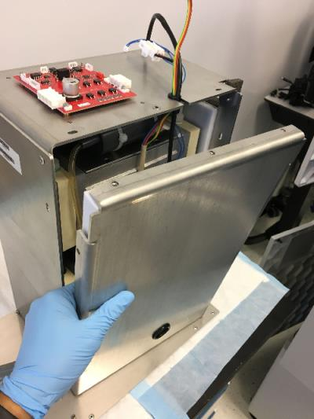
- Remove the four 5 mm hex screws that are located underneath the module surrounding the fan.
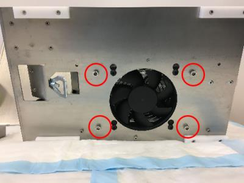
- Remove the pump wires and protective rubber O-ring on the pump housing.
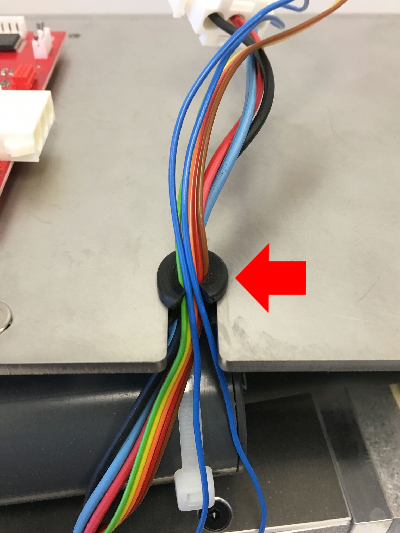
- Slide the quad-head pump assembly out of the vacuum housing.
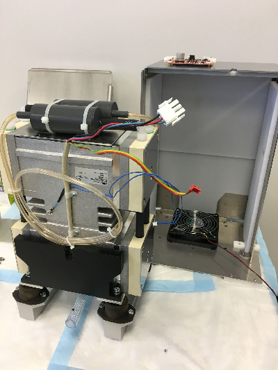
- Remove the two 5mm screws that secure the balancing weights on each side of the pump.
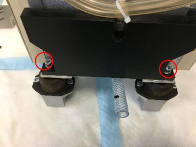
- Remove the 2 balancing weights.
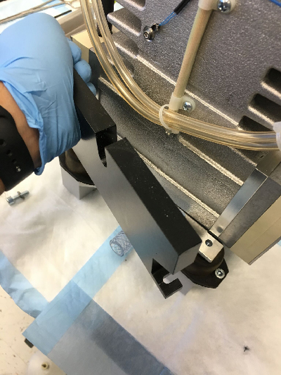
- Remove the vacuum pump from the vibration dampeners.
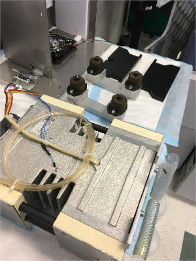
- The mufflers and all muffler tubing will be reused. Cut the zip ties holding the 2 mufflers on the top of the pump and also the zip ties holding the clear muffler output flow lines (these are the smaller diameter lines). Note the tube routing to re-install on new pump. Then pull the mufflers from the black short hoses. Discard the old pump.
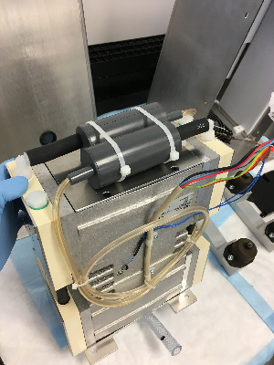
Replacement Procedure
- On the bottom of the new pump, install the short tube on the "T" fitting (comes in a bag with new pump) as shown. This is the tube that will extend outside the module when re-installed and connect to the system vacuum line. (An extra plastic fitting for the external connection is also provided in the bag if needed.)
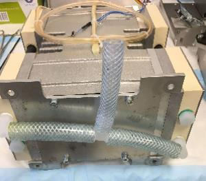
- Re-install the mufflers on the new pump in the same way as before and secure with zip ties.
- Set the new pump on the vibration dampeners. (Refer to Step 9 of the Removal Procedure.)
- Re-install the 2 balancing weights. (Refer to Step 8 then Step 7 of Removal Procedure.)
- Slide the quad-head pump assembly into the vacuum housing.
- Secure the pump assembly by installing the same four 5 mm hex screws underneath the module surrounding the fan.
- Wrap the cables (except fan cable) with the cut O-ring as shown. Make sure the blue thin cable gets placed in first. The fan cable should be placed in last since it is held by the vacuum housing cover.
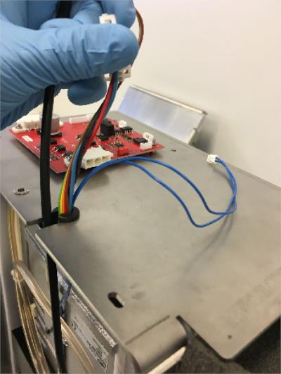
- Install the vacuum housing metal cover. Make sure the fan cable is the last cable to be placed into the cut O-ring. Tighten down the cover with the ten 3mm screws that go around the housing.
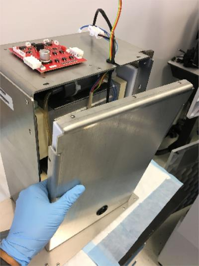
- Plug in the cables back into their corresponding slots on the red control PCB that is located on top of the vacuum housing. (The red connector does have a guide pin.)
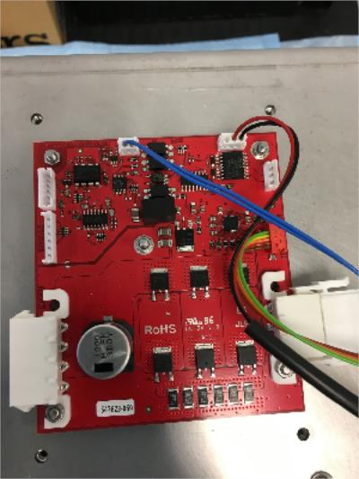
- Reinstall the vacuum module.
 button at the top of the page to send feedback, comments, or change requests.
button at the top of the page to send feedback, comments, or change requests.